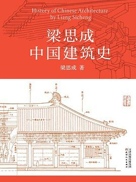

《梁思成中国建筑史》

总体观点
中国现代建筑学一代宗师梁思成先生在抗战流亡李庄的艰苦岁月里写就的开山巨著。全书是中国学者第一部运用现代科学测绘与历史实证方法、系统梳理中国古建筑三千年演进脉络的里程碑著作。
核心论点：中国建筑是世界上唯一历经数千年绵延不绝、自身具有严密‘文法’与‘词汇’的独立建筑体系。其演变绝非静止泥古，而是经历了一条清晰鲜明的生命历程：汉代之古拙、隋唐之豪劲、宋辽金之秀丽、明清之繁缛。
作者与中国营造学社同仁在兵荒马乱中踏遍大江南北，以血汗实地考察测绘了五台山佛光寺、独乐寺、应县木塔、赵州桥等国宝古建，用确凿科学实物打破了外国学界‘中国无唐代木构建筑’的傲慢断言，为中华文明确立了无可动摇的建筑史坐标。
核心观点 共 6 条
-
1. 中国建筑拥有严密完整的‘文法’体系与‘词汇’系统
梁思成创造性地将语言学文法概念引入建筑研究：斗栱梁柱是建筑的‘词汇’，榫卯连接与模数开间是‘文法’；古人依文法构筑，方能千百年来保持体系纯正又千变万化。
例 ·宋代《营造法式》确立的‘材分制’与清工部《工程做法则例》的‘斗口制’，就是中国古代建筑标准化、模数化的官方文法宝典。 -
2. 斗栱是中国传统木构建筑从结构走向装饰的演变晴雨表
考察斗栱尺寸与构造，是断定古建筑建造年代的最核心金标准；斗栱在唐宋是真实挑出承重的宏大力学枢纽，至明清则尺度急剧缩小，逐渐退化为屋檐下的密集装饰符号。
例 ·唐代佛光寺大殿斗栱硕大雄健，出挑深远占柱高二分之一；而清代故宫太和殿斗栱密密麻麻排列几十攒，仅起檐下装饰线脚作用。 -
3. 以实地踏勘科学测绘建立中国建筑史，粉碎外国学术偏见
中国传统史籍历来轻视工匠营造，文献记载残缺不全；营造学社以近代实地精准测绘、实物考订拓片的方法，第一次将中国建筑推上国际科学殿堂。
例 ·梁思成林徽因依据敦煌莫高窟壁画线索，历尽艰辛在五台山深山古刹中发现唐代大佛光之寺，以大殿梁下唐代宁公遇墨书题字实锤唐代原构。 -
4. 两千年建筑演进四期论：古拙、豪劲、秀丽与繁缛
梁思成确立了中国建筑艺术风格宏大分期：两汉以前为古拙初创期；隋唐为斗栱雄大、屋檐舒展的‘豪劲时期’；两宋辽金渐趋精巧柔和的‘秀丽时期’；元明清走向规整程式化的‘繁缛时期’。
例 ·辽代蓟县独乐寺观音阁保留了唐代豪劲雄风；而到了清代干嘉时期，官式建筑则严格受制于工部规范，虽极尽工巧却丧失了唐代的大气磅礴。 -
5. 以木构为主流骨架的文化抉择，源于天人合一与家族延续观念
中国先民掌握石料拱券技术却始终以木材为主体材料，并非技术落后，而是源于顺应自然、取材就地、抗震弹性以及古人视建筑为家族生长‘传家之器’的哲学观念。
例 ·隋代李春设计建造的赵州桥证明中国人早已精通超凡石拱券技术，但在宫殿庙宇营造中依然坚定选择温润舒适的木构框架。 -
6. 反对僵死的大屋顶复古，主张创造属于现代中国的新建筑文法
研究古建筑史绝非为了让后人穿长袍马褂住仿古房子，而是要深刻理解中国传统空间处理的‘精气神’，运用现代钢筋混凝土与玻璃创造具有中国神韵的现代新建筑。
例 ·梁思成晚年主持人民英雄纪念碑设计，融合了古典汉唐须弥座的高贵与现代丰碑的挺拔纯净，成为现代中国建筑探索的不朽典范。
全书结构 8 部分 官方目录已核验
-
第一章 绪论
奠定中国建筑史研究方法论：中国建筑木构特征、分期框架（豪劲、秀丽、繁缛）与两部官式文法宝典。
例 ·以木构梁柱为骨架、斗栱为核心力学枢纽、屋顶出檐升起为轮廓，宋《营造法式》与清《工程做法则例》为破译语法钥匙。 -
第二章 上古时期
考订夏商周至秦代建筑发轫：版筑台基、瓦当发明、秦咸阳宫与阿房宫遗址印证早期木构与高台建筑的雄伟萌芽。
例 ·安阳殷墟出土的版筑夯土台基与柱础排列，证实早在三千年前商代晚期中国已确立前堂后寝的院落空间雏形。 -
第三章 两汉
依据文献记录与地下汉画像石、汉阙石室实物，实证汉代木构斗栱已初具规模，建筑呈现浑厚古朴的初创气象。
例 ·四川雅安高颐阙雕刻的仿木构斗栱与斜撑，逼真记录了两千年前汉代木构多层楼阁的真实榫卯构造细节。 -
第四章 魏、晋、南北朝
佛教东传引爆石窟寺与砖石佛塔建造狂潮，外来西域印度雕饰与中原传统木构体系融合，步入豪劲期开端。
例 ·河南登封嵩岳寺十二角砖塔打破方形传统，融合印度窣堵坡与中国密檐塔造型，历经千百载风雨依然巍然屹立。 -
第五章 隋、唐
豪劲时期的黄金巅峰：赵州桥开敞肩券拱先河，佛光寺大殿与南禅寺大殿以雄大斗栱与硕大出檐震撼世界。
例 ·梁思成林徽因在山西五台山寻获佛光寺东大殿，斗栱出跳宏阔占柱高二分之一，一举粉碎了日本学者‘中国无唐代木构’的断言。 -
第六章 五代、宋、辽、金
由豪劲转向秀丽渐趋严谨规整：辽蓟县独乐寺保留唐风，宋代《营造法式》确立材分模数制，建筑造型精巧柔和。
例 ·蓟县独乐寺观音阁以双层空心中庭容纳高大十一面观音像，二十四种斗栱灵活组合，展现了辽代高超的木构工程智慧。 -
第七章 元、明、清
步入成熟乃至僵化的繁缛期：元代减柱法结构狂放，明清官式建筑斗栱退化为装饰符号，但故宫紫禁城规制达大成。
例 ·北京故宫太和殿重檐庑殿顶与三层汉白玉台基达到封建礼制顶峰，斗栱尺度退化但榫卯防震构架与平面轴线组织极尽规整。 -
第八章 结尾
总结中国建筑两千年来一脉相承的文法演变，呼吁将传统建筑‘词汇’与‘文法’融会贯通于现代中国新建筑创作中。
例 ·反对生搬硬套‘大屋顶’的死板仿古，主张深刻理解木构框架受力原理与庭院空间序列，创造属于现代中国的建筑语言。